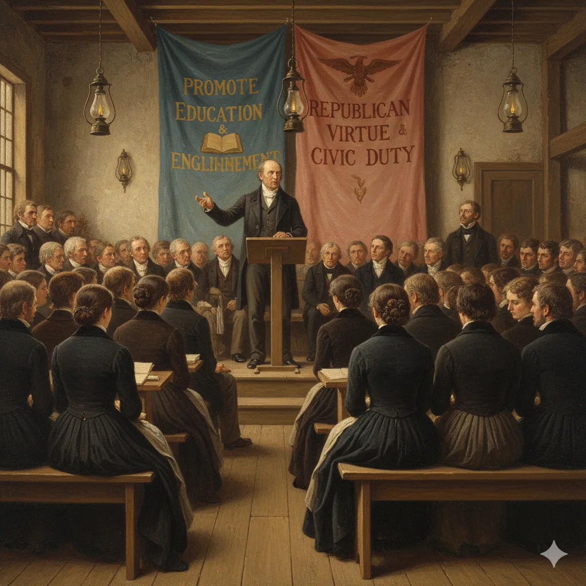
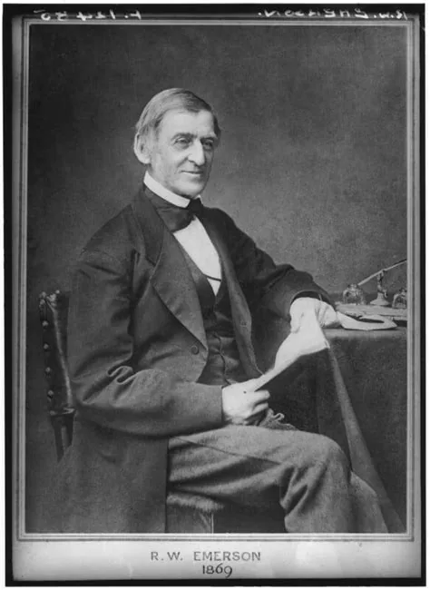

The Print Revolution: Scale & Impact
Technological Innovation
- Steam presses, mass-produced paper, stereotyping
Economic Innovation
- Advertising replaces subscriptions as primary revenue
Social Impact
- Literacy expands across class and region
- Print becomes a commodity, not a luxury
Key Example
- Benjamin Day's New York Sun (1833)—news for a penny
BY THE NUMBERS
- ~1,000 newspapers by 1835
(vs. ~200 in 1800) - ~90% of white adults literate by 1840 (census)
- Lower in the South; barred for most enslaved people
- Book prices drop from $1.50 to 25¢

Sentimental Fiction & Female Readers
The "Scribbling Women"
- Susan Warner (The Wide, Wide World, 1850)
- Maria Cummins (The Lamplighter, 1854)
- E.D.E.N. Southworth (The Hidden Hand, serialized)
Cultural Significance
- Blend of sentiment and moral didacticism
- Novels teach "emotional literacy"—feeling becomes virtuous
- Female reading publics gain cultural authority
Link forward: Emotional reading prepares ground for Lecture 2's religious feeling


Visual Print Culture: Images for the Masses
Lithography Revolution (1820s–1830s)
- Cheap decorative prints enter middle-class homes
- Currier & Ives (Currier’s firm from 1834; Ives joined 1857) mass-produce American scenes
Political Cartoons & Illustrated Newspapers
- Visual culture democratizes alongside textual culture
- Images shape national myths — frontier, domesticity, prosperity

Americans could now see idealized versions of themselves and their nation hanging on their walls.
The Lyceum Movement: Education, Culture, and Spectacle
What Were Lyceums?
The Lyceum movement began in the 1820s as a network of local associations devoted to adult education, civic improvement, and moral uplift. These organizations hosted lectures, debates, and demonstrations designed to bring knowledge to ordinary citizens.
Founded by Josiah Holbrook in 1826, the lyceum became the backbone of antebellum public culture—where Americans could learn about science, literature, reform, and philosophy outside formal schools.

High Culture and Moral Philosophy
Prominent writers and thinkers like Ralph Waldo Emerson brought Transcendentalist ideas to Lyceum audiences. Their lectures on self-reliance, moral philosophy, and the pursuit of truth helped popularize intellectual and literary culture among the middle class.
Emerson’s tours through small towns and city halls made philosophy a public performance, accessible to tradesmen, teachers, and farmers alike.

Popular Science and Spectacle
Alongside high-minded philosophy, Lyceum stages also hosted demonstrations of phrenology, mesmerism, and electrical experiments—blurring the line between education and entertainment.
Figures like Orson and Lorenzo Fowler delivered engaging phrenology lectures, promising moral and personal insight through the “science” of skull reading. These popular pseudo-sciences reflected Americans’ hunger for self-knowledge and moral order.

Critical Question:
Was the Lyceum a democratic classroom or a performance stage? Did it elevate the public or merely entertain them?